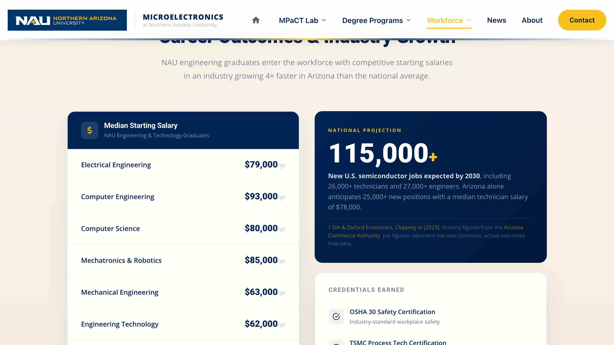

Workforce Development · Career Outcomes & Salary Data (§7)¶
File: WorkForceDevelopment.html
Also affects: CareerPathways.html
Last Updated: May 2026
Internal Use Only
⚠ Cross-Page Dependency — Read This First¶
Salary data appears on two separate pages. The median starting salary figure for each degree is the same number in both places — if you update one without the other, the site shows contradictory numbers with no visible error.
| Degree | WFD page location | CareerPathways page location |
|---|---|---|
| Computer Engineering | wfd-salary-row__amount |
cp-stat-card grad-gold in #panel-ce |
| Computer Science | wfd-salary-row__amount |
cp-stat-card grad-gold in #panel-cs |
| Electrical Engineering | wfd-salary-row__amount |
cp-stat-card grad-gold in #panel-ee |
| Mechatronics & Robotics | wfd-salary-row__amount |
cp-stat-card grad-gold in #panel-mechatronics |
| Mechanical Engineering | wfd-salary-row__amount |
cp-stat-card grad-gold in #panel-mechanical |
| Engineering Technology | wfd-salary-row__amount |
cp-stat-card grad-gold in #panel-bset |
Additionally, CareerPathways.html has a salary range table for each degree (entry-level vs. mid-level, per role title). These ranges are separate from the single median figure — update them independently as labor market data changes.
Every salary update requires touching both files. See Section 4 for the full update procedure.
Section Overview¶

The Career Outcomes section — the salary rows on the left and the national job growth figure on the right. This is the section most frequently updated when labor market data changes.
The Career Outcomes section has two columns:
- Left — Salary table: one
.wfd-salary-rowper degree, showing median starting salary - Right — Growth card with a national projection number, and a credentials list with inline SVG icons
| Area | Search For (Ctrl+F) | What You Can Change |
|---|---|---|
| Salary table | class="wfd-salary-table" |
Degree rows, amounts, source attribution |
| Individual row | Degree name (e.g., Electrical Engineering) |
Field name and dollar amount |
| Growth card number | class="wfd-growth__card-num" |
National projection figure |
| Credentials list | class="wfd-growth__creds" |
Credential items (inline SVG icons) |
| Source attribution | class="wfd-salary-source" |
Data source year references |
SECTION 1 — Salary Table Rows¶
Search for: class="wfd-salary-table"
Each row follows this pattern:
The /yr suffix goes inside a <span> inside wfd-salary-row__amount. Without the <span>, the suffix renders at the same size as the dollar figure — visually incorrect.
Adding a row¶
Copy the block above and paste it before the wfd-salary-source div. Then add the corresponding entry to CareerPathways.html — see Section 4.
Removing a row¶
Delete the entire .wfd-salary-row block. Then remove the corresponding panel from CareerPathways.html if the degree no longer exists.
Changing a dollar amount¶
Change the number inside wfd-salary-row__amount before the <span>. Then update the same degree's cp-stat-card grad-gold block in CareerPathways.html — see Section 4.
SECTION 2 — Growth Card¶
Search for: class="wfd-growth__card"
The national projection number uses an <em> tag for the suffix (same pattern as the hero stats panel):
Change the number before <em> and the suffix inside <em>. Update wfd-growth__card-text and wfd-growth__card-source if the supporting text or source links change.
SECTION 3 — Credentials List¶
Search for: class="wfd-growth__creds"
Each credential uses an inline SVG icon (not Font Awesome). To add a credential:
Copy an existing .wfd-cred block to reuse its icon, or use the checkmark path shown above for a generic credential item.
SECTION 4 — Full Salary Update Procedure (Both Files)¶
When labor market data is refreshed, follow these steps across both files.
File 1: WorkForceDevelopment.html¶
Step 1 — Search for class="wfd-salary-table". Update each wfd-salary-row__amount to the new median figure.
Step 2 — Search for class="wfd-salary-source". Update the year references in the BLS and Salary.com citation text (e.g., "May 2024" → the new release year).
File 2: CareerPathways.html¶
Step 3 — For each degree, search for its panel ID (e.g., id="panel-ce" for Computer Engineering). Inside the panel, find the cp-stat-card grad-gold block and update cp-stat-num:
Panel IDs for each degree:
| Degree | Panel ID |
|---|---|
| Computer Engineering | id="panel-ce" |
| Computer Science | id="panel-cs" |
| Electrical Engineering | id="panel-ee" |
| Engineering Technology | id="panel-bset" |
| Mechanical Engineering | id="panel-mechanical" |
| Mechatronics & Robotics | id="panel-mechatronics" |
| PTAP | id="panel-ptap" |
Step 4 — In CareerPathways.html, also update the salary range tables within each panel. Each panel has a cp-career-table with entry-level and mid-level ranges per role title. These ranges are separate from the single median figure:
Step 5 — In CareerPathways.html, search for class="cp-citation__sources" (near line 1969) and update the year references in the citation text and badge links.
Please double-check: After updating both files, open each page in the browser and visually confirm the salary figures match between the WFD salary table and the CareerPathways stat cards. Open DevTools (F12 → Console) and verify there are no script errors on
CareerPathways.html— it uses GSAP animations that will throw if the file has HTML syntax errors.
SECTION 5 — Source Attribution¶
Both pages cite the same three sources. The attribution paragraph text (not the linked URLs) contains year references that must be updated when new data is published.
In WorkForceDevelopment.html — Search for class="wfd-salary-source":
In CareerPathways.html — Search for class="cp-citation__sources":
Update both when switching to a new BLS OES release year.
Quick Reference¶
| Task | Search For (Ctrl+F) |
|---|---|
| Update a salary figure | Degree name (e.g., Electrical Engineering) in WFD, then id="panel-ee" in CareerPathways |
| Update salary ranges per role | id="panel-XX" → class="cp-career-table" in CareerPathways |
| Update source year | wfd-salary-source in WFD, cp-citation__sources in CareerPathways |
| Update growth projection | class="wfd-growth__card-num" |
| Add/edit credentials | class="wfd-growth__creds" |
Changes That Must Always Be Made Together¶
| If you change… | You must also change… |
|---|---|
A median salary in wfd-salary-row__amount |
The matching cp-stat-num inside #panel-XX in CareerPathways.html |
Source year in wfd-salary-source |
Source year in cp-citation__sources in CareerPathways.html |
| Add a new degree row to WFD salary table | Add the matching panel to CareerPathways.html |
| Remove a degree row from WFD | Remove the matching panel from CareerPathways.html |